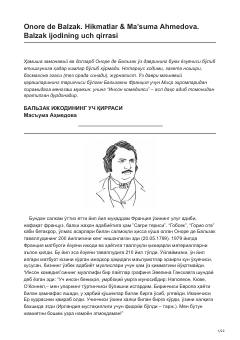

BIOnore de Balzak ijodi va uning adabiyotdagi o'rni haqida tahliliy maqolalar to'plami.
Ushbu asar fransuz yozuvchisi Onore de Balzakning hayoti va ijodiy merosiga bag'ishlangan tahliliy maqolalar to'plamidir. Muallif Balzakning "Inson komediyasi" asari orqali shaxs, oila va jamiyat munosabatlarini qanday yoritganini tahlil qiladi.